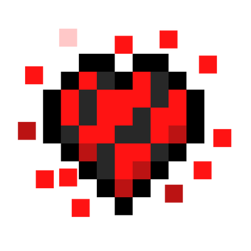
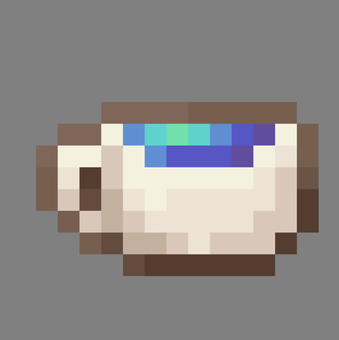
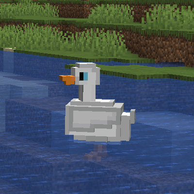

Mody do Minecrafta
Fancy Health Bar [1.20.4]
Opis
Ten prosty mod klienta sprawi, że Twój pasek zdrowia będzie ładniejszy! Teraz utracie zdrowia będą towarzyszyć czerwone cząsteczki wylatujące z waszych serc.
Tea Time [1.20.4]
Opis
Czy kochasz herbatę, tak jak uwielbia ją autor tego moda? Teraz możesz zaparzyć 21 rodzajów herbat, niezależnie od tego, czy będzie to herbata imbirowa, dyniowa czy świecąca herbata jagodowa. Aby przygotować ten wspaniały napój, będziesz musiał stworzyć nowy blok - czajniczek. Ponadto w świecie będzie można znaleźć konstrukcję zwaną ogrodem herbacianym.
BetterMobs (Ducks) [1.20.4]
Opis
Ten mod dodaje jednego nowego moba - kaczkę! Kaczki można spotkać pływające w stawach, a ich gniazda mogą znajdować się w pobliżu. Z mięsa kaczego i jajek, a także marchwi, buraków i dyni można przygotować pyszny gulasz.